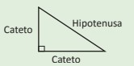

Definicion
El Teorema de Pitágoras es uno de los teoremas que más ha maravillado a todas las civilizaciones a lo largo de la historia. Algunos historiadores sugieren que en Babilonia por el año 1600 a.C., se calculaban las diagonales de ciertas figuras utilizando este teorema, sin embargo, la primera demostración formal conocida se le otorga usualmente al filósofo matemático griego Pitágoras de Samos, considerado el primer matemático puro. Este teorema cuenta con una gran cantidad de demostraciones realizadas por personajes importantes de la ciencia y la matemática a lo largo de toda la historia.
En la antigüedad se utilizaba el teorema de Pitágoras para medir terrenos en agricultura, la altura de ciertos objetos, obtener el volumen de sólidos como pirámides y conos. En la actualidad, el teorema sigue siendo indispensable en toda área donde es necesario el
cálculo de longitudes, como en ingeniería, agricultura, física, astronomía y hasta en las artes. En la matemática, el teorema permitió el fortalecimiento de algunas áreas como la geometría y el cálculo, además del descubrimiento de los números irracionales.
En un triángulo rectángulo los lados adyacentes al ángulo de 90°, se llaman catetos, mientras que el lado que es opuesto al ángulo recto se llama hipotenusa.

A continuacion se presenta el siguiente ejemplo:
Encuentre la longitud del lado desconocido en el siguiente triangulo
Los catetos tienen longitudes de 3 cm y 4 cm, como el triangulo ABC es un triángulo rectángulo, así por el Teorema de Pitágoras se tiene:
Se extrae raíz cuadrada y se sabe que x > 0 resulta:
x = 5
Por tanto, la longitud de la hipotenusa es 5 cm.
Siguiente problema
La hipotenusa mide 10 cm y uno de los catetos 8 cm, el triangulo DEF es un triángulo rectángulo, asi por el Teorema de Pitágoras se tiene:
Por transposición de términos:
Se extrae raiz cuadrada y se sabe que y > 0, resulta:
y=6
por tanto, la longitud del otro cateto es 6cm.